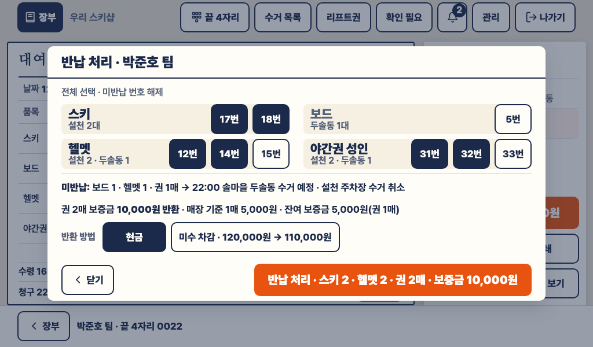
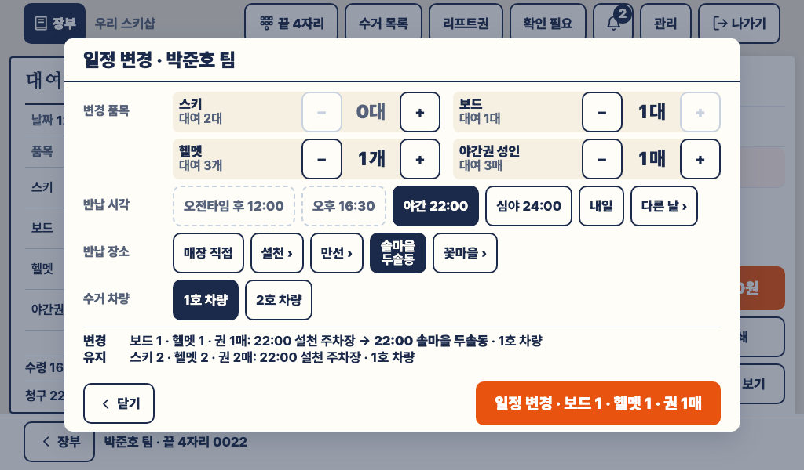
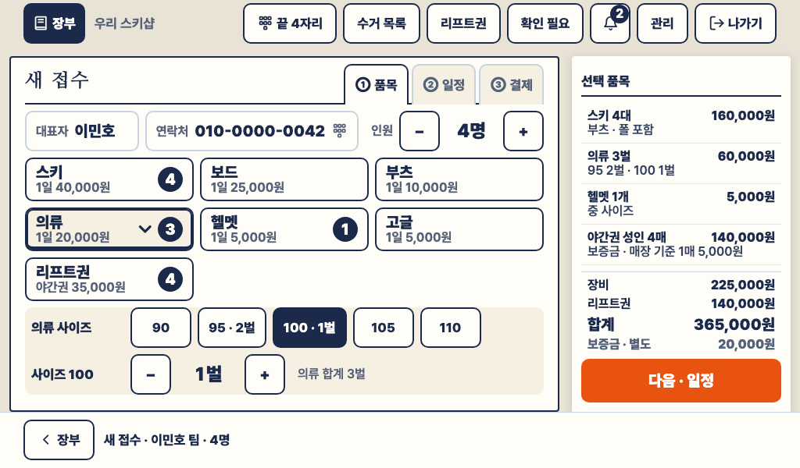
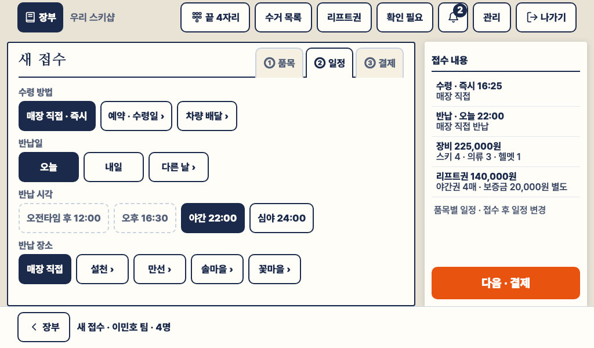
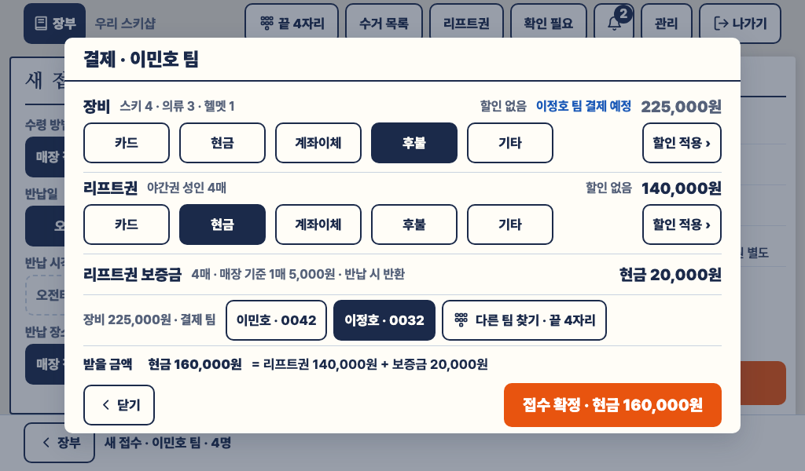
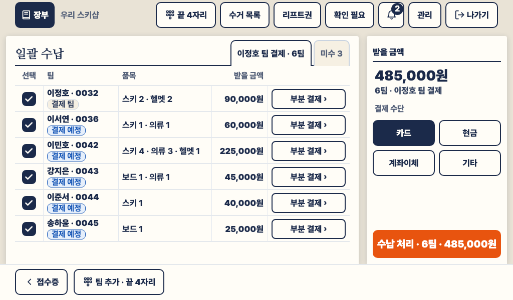
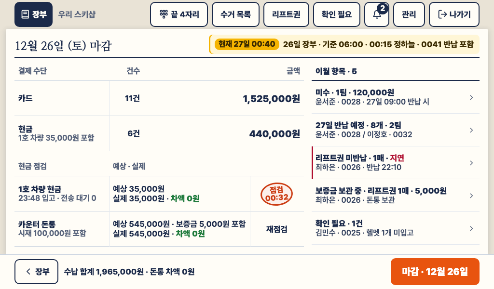
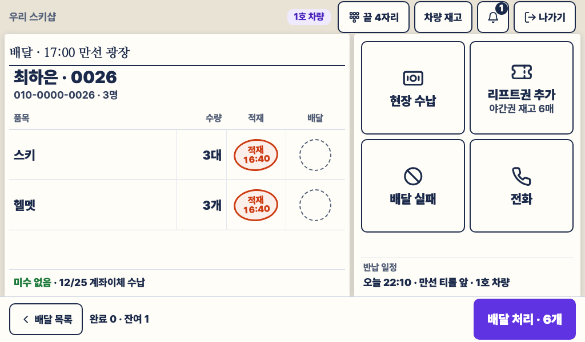
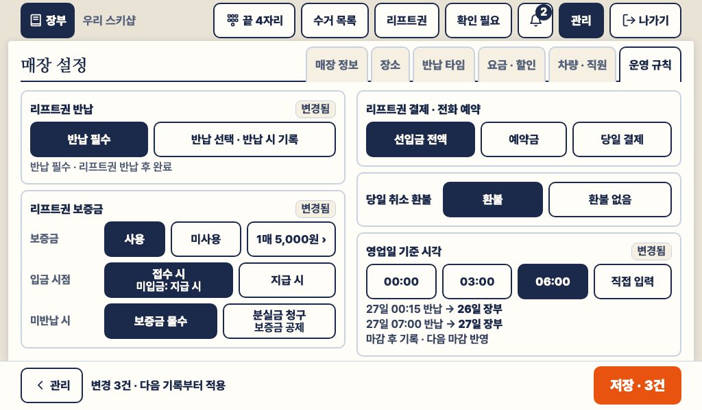

둘째 판 화면 시안
스키노트 · 2026-09-24 · 포스 1024×600 여덟 장, 기사 태블릿 1024×600 한 장
사장님 답(2026-09-24)을 넣어 구현한 C 화면(오늘 대여 장부 · 대여 접수증 · 야간 수거 목록)에 이어 그린 아홉 장입니다. 그림은 코드 시안(vN-*.html)을 검사기가 찍은 것이고, 앱의 색 · 부품 · 글꼴을 그대로 씁니다. 숫자는 모두 한 날(12월 26일 (토))의 이야기에서 나옵니다(spec.md 2-4).
화면 문구는 2026-09-24에 문구 표 대로 짧은 시스템 말로 바꿨습니다(약속 바꾸기 → 일정 변경, 반납 도장 찍기 → 반납 처리 등, 배치 그대로). 아래 힉스필드 그림은 그 전의 말입니다.
사장님 답 화면에 넣은 것 화면
리프트권은 꼭 돌려받음 매장이 선택: 반납 필수 / 반납 선택. 권 보증금은 1매 5,000원(매장 기준) , 반납 매수만큼 반환, 마감에 보관 중 보증금 V8 · V4 · V1 · V2 · V6 자정 넘어도 전날 반납 영업일 기준 시각 06:00. 27일 00:15 반납 · 00:40 마감도 26일 장부 V8 · V6 왼쪽 메뉴 줄 없앰 어느 화면에도 없음. 머리줄과 종이의 색인 탭만 아홉 장 모두 백업은 추천대로 화면 변화 없음(관리의 백업 카드는 7주차에) 없음 부분 반납도 되나 된다. 반납 · 일정 · 수납 · 보증금이 품목 줄과 수량 단위(사람 단위가 아님) V1 · V9 · V4 · V5
채택 규칙
아홉 장 모두 코드 시안을 채택 합니다. 검토에서 찾은 73곳을 고쳤고, 가게 말과 규칙이 맞으며, 검사기가 크기를 잽니다.
힉스필드 그림은 검토 전의 첫 설명서로 뽑은 것이라 채택하지 않습니다. 모양이 분명히 나은 곳(큰 옆 버튼 · 꽉 찬 배치 · 큰 수 표시 등)만 코드 시안에 옮겼고, 문구와 동작은 그대로입니다.
옮긴 뒤에도 모든 화면 · 상태 · 작은 틀에서 검사를 통과합니다. 힉스필드 그림은 다시 뽑지 않았습니다(샘플 오타는 기록만).
채택 기록 adoption.md 힉스필드 기록 results.json
검사 통과 · 9개 화면 · 어긋남 0
상태 변형 · 작은 틀까지 모두 통과
채택 · 아홉 장 모두 코드 시안
문구 표 반영 · 2026-09-24
문구 표 wording.md 명세 spec.md 힉스필드 요청문 spec.json 공통 모양 base.css
다시 재기: node docs/design/screens-v2/measure.mjs
V1 반납
V9 일정 변경
V2 새 접수 ①
V3 새 접수 ②
V4 접수 확정
V5 일괄 수납
V6 마감
V7 기사
V8 운영 규칙
1. 반납 · 일정
V1
반납 확인 창 · 부분 반납 포스 · 창 860 × 440 · 21:30 박준호 팀
손님이 매장에 가져온 번호만 남겨 반납 처리하고, 반납된 리프트권 매수만큼 보증금을 반환한다. 미반납 보드 1 · 헬멧 1 · 권 1매는 숙소 수거 일정을 그대로 가진다.
채택 · 코드 시안 — 힉스필드 그림에서 품목 이름 22px과 칸 사이 · 옆 여백을 옮김(세로는 창 한도 505 때문에 그대로).

다른 상태 · 작은 틀
힉스필드 그림
V9
일정 변경 · 부분 품목 포스 · 창 860 × 약 503 · 19:40 박준호 팀
한 팀 품목 중 일부 수량만 반납 시각 · 장소 · 수거 차량을 바꾼다. 보드 1 · 헬멧 1 · 권 1매만 22:00 솔마을 두솔동으로 옮기고 나머지는 설천 주차장 그대로.
채택 · 코드 시안 — 옮긴 것 없음: 창이 505 중 503을 쓰고, 그림의 '받는 사람' 줄은 검토에서 없앤 모양.

다른 상태 · 작은 틀
힉스필드 그림
2. 새 접수
V2
새 접수 ① 품목 포스 · 16:25 이민호 팀
대표자 한 사람만 적고 품목 종류를 눌러 규격과 수량을 고른다. 합계는 장비 + 리프트권이고, 권 보증금은 합계 밖에 별도 로 보인다.
채택 · 코드 시안 — 힉스필드 그림처럼 고른 수 표시를 크게, 지금 연 종류는 굵은 테두리 + 아래 갈매기(남색 바탕은 '고름'이라 쓰지 않음).

힉스필드 그림
V3
새 접수 ② 일정 포스 · 16:25 이민호 팀
수령 방법 · 반납일 · 반납 시각 · 반납 장소를 한 화면에서 고른다. 오늘 이미 지난 반납 타임은 자리를 지킨 채 누를 수 없다.
채택 · 코드 시안 — 옮긴 것 없음: 그림의 권종 줄 · '받는 방법' · '다음 · 확인'은 검토에서 바꾼 것.

힉스필드 그림
V4
접수 확정 창 · 칸별 수납 포스 · 창 860 × 504 · 16:26 이민호 팀
결제 칸(장비 · 리프트권 · 리프트권 보증금)마다 수단을 정하고 받을 금액을 수단별로 보인 뒤 한 번에 접수를 확정한다. 장비 값은 후불로 가족 대표 이정호 팀이 결제한다.
채택 · 코드 시안 — 옮긴 것 없음: 그림의 창 폭이 860이 아니고 '수납하고'는 보증금과 맞지 않는 말.

다른 상태 · 작은 틀
힉스필드 그림
3. 수납
V5
일괄 수납 · 여러 팀 포스 · 16:40 이정호 팀
가족 여섯 팀 몫을 카드 한 번으로 받는다. 팀 안의 부분 결제는 사람이 아니라 품목으로 선택한다.
채택 · 코드 시안 — 옮긴 것 없음: 줄 52는 장부 미수 탭과 같은 줄이고 그림의 '미수' 열 · '전부 ›'는 검토에서 없앤 것.

다른 상태
힉스필드 그림
4. 마감
V6
하루 마감 포스 · 27일 00:40
영업일 기준 06:00 전이라 자정을 넘겨도 26일 장부를 닫는다. 차량 현금 → 돈통 → 마감 차례로 점검하고, 보관 중 보증금과 미반납 권까지 이월 항목을 본다.
채택 · 코드 시안 — 힉스필드 그림처럼 종이 아래까지 차게, 줄이 남는 높이를 나눠 씀(계좌이체 0원 줄은 규칙대로 없음).

다른 상태 · 작은 틀
힉스필드 그림
5. 기사
V7
기사 업무 판 · 한 팀 기사 태블릿 · 16:55 최하은 팀 배달
기사가 목록의 한 줄을 눌러 그 팀 일을 크게 본다: 품목과 도장, 미수, 반납 일정. 현장 수납 · 리프트권 추가 · 배달 실패 · 전화를 장갑 낀 손으로 누른다.
채택 · 코드 시안 — 힉스필드 그림처럼 선 그림 + 글의 큰 옆 버튼 넷이 판을 채우고, 왼쪽 줄 · 도장 · 이름을 키움(연결이 끊겨도 크기 그대로).

다른 상태 · 작은 틀
힉스필드 그림
6. 설정
V8
매장 설정 · 운영 규칙 포스 · 관리 → 매장 설정
리프트권 반납 필수 여부, 권 보증금(매장 기준 1매 5,000원 · 입금 시점 · 미반납 시), 영업일 기준 시각(06:00)을 매장마다 선택한다. 다른 스키장은 다르게 고를 수 있다.
채택 · 코드 시안 — 힉스필드 그림처럼 고르기 버튼이 카드 폭을 나눠 채움(값 버튼만 제 폭).

작은 틀(카드를 통째로 쪽 넘김)
힉스필드 그림
{kind=link}
{kind=link}
{kind=link}
{kind=link}
{kind=link}
{kind=link}
{kind=link}
{kind=link}
{kind=link}
{kind=link}
{kind=link}
{kind=link}
{kind=link}
{kind=link}
{kind=link}
{kind=link}
{kind=link}
{kind=link}
{kind=link}
{kind=link}
{kind=link}